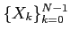
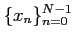
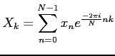
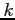
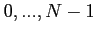
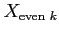
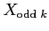
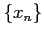
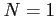
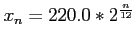

The FFT is an essential tool for digital signal processing and electronic music production. It is easily, commonly, and inefficiently implemented via the recursive Cooley-Tukey algorithm which we now briefly review.
To compute the discrete Fourier transform,
, of a sequence
 we must sum

for each  in
. As if we were Danielson and Lanczos we split the above sum into its even and odd constituents
where
 and
 are the th component of the DFT of the sequences obtained by selecting only the even or odd members from . In this manner we compute the DFT by recursively computing the DFT of the even and odd subsequences of . By the time that  our DFT is simply the identity mapping from the constant sequence into the constant mode in Fourier space.
Now suppose that in our initial array we store values corresponding to the frequencies of the usual western equally tempered scale.

and execute our DFT on playing the corresponding frequency on a guitar each time we reach the base case in our recursion. This will play the notes of the scale in bit reversed order and simultaneously allow us a tool for digital signal processing.
ryan
2009-11-25